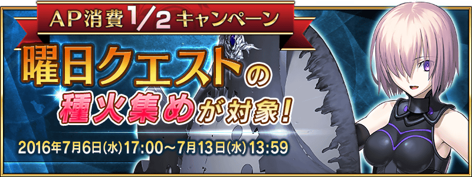

自2016年7月6日(三)17:00，在迦勒底之門出現的曜日關卡「種火集め」的初級，中級，上級，超級的AP消費以期間限定變成1/2。
鍛鍊Servant，挑戰各式各樣的關卡吧！
◆舉辦期間◆
2016年7月6日(水) 17:00～7月13日(水) 13:59
◆對象關卡◆
種火集め＜槍・殺編＞ 初級、中級、上級、超級
種火集め＜剣・騎編＞ 初級、中級、上級、超級
種火集め＜弓・術編＞ 初級、中級、上級、超級
種火集め＜ランダム編＞ 初級、中級、上級、超級
【種火集め 關卡的難易度等】
| 難易度 | 推薦Lv | 消費AP | 通過報酬 |
|---|---|---|---|
| 初級 | 10 | 10→5 | マナプリズムｘ1 |
| 中級 | 25 | 20→10 | マナプリズムｘ2 |
| 上級 | 40 | 30→15 | マナプリズムｘ3 |
| 超級 | 60 | 40→20 | マナプリズムｘ4 |
※關卡通過報酬的マナプリズム只有初次通過才能獲得。
由於通過報酬每週都會重置，記得每週去通過關卡，持續入手報酬「マナプリズム」吧。
◆曜日關卡攻略的重點◆
請參考攻略推薦職階組成隊伍，挑戰曜日關卡！

※曜日別關卡的詳情如下。
曜日別關卡一覧
| 曜日 | 關卡名 | 做為戰利品獲得的主要道具 | 攻略推薦職階 |
|---|---|---|---|
| 月 | 弓の修練場 | Archer的靈基再臨用道具、Archer的技能強化素材道具 |  |
| 種火集め <槍・殺編> AP1/2
|
Lancer、Assassin、Berserker的經驗值卡 |   |
|
| 火 | 宝物庫の扉を開け | QP |  |
| 槍の修練場 | Lancer的靈基再臨用道具、Lancer的技能強化素材道具 | |
|
| 種火集め <剣・騎編> AP1/2
|
Saber、Rider、Berserker的經驗值卡 |   |
|
| 水 | 狂の修練場 | Berserker的靈基再臨用道具、Berserker的技能強化素材道具 | ALL |
| 種火集め <弓・術編> AP1/2
|
Archer、Caster、Berserker的經驗值卡 | |
|
| 木 | 宝物庫の扉を開け | QP | |
| 騎の修練場 | Rider的靈基再臨用道具、Rider的技能強化素材道具 | |
|
| 種火集め <槍・殺編> AP1/2
|
Lancer、Assassin、Berserker的經驗值卡 | |
|
| 金 | 術の修練場 | Caster的靈基再臨用道具、Caster的技能強化素材道具 | |
| 種火集め <剣・騎編> AP1/2
|
Saber、Rider、Berserker的經驗值卡 | |
|
| 土 | 宝物庫の扉を開け | QP | |
| 殺の修練場 | Assassin的靈基再臨用道具、Assassin的技能強化素材道具 | |
|
| 種火集め <弓・術編> AP1/2
|
Archer、Caster、Berserker的經驗值卡 | |
|
| 日 | 宝物庫の扉を開け | QP | |
| 剣の修練場 | Saber的靈基再臨用道具、Saber的技能強化素材道具 | |
|
| 種火集め <ランダム編> AP1/2
|
Saber、Archer、Lancer、Rider、Caster、Assassin、Berserker的經驗值卡（隨機） | – |